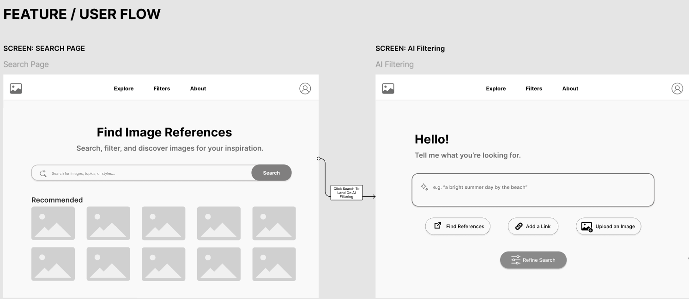
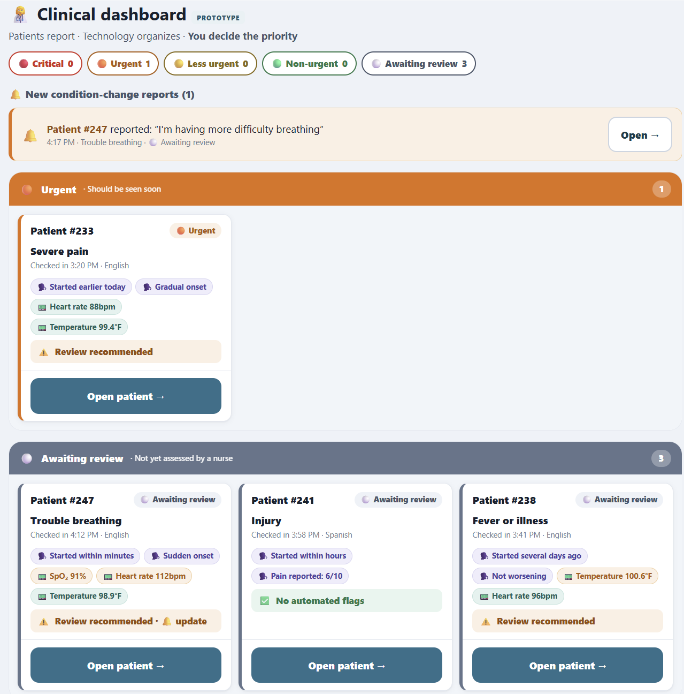
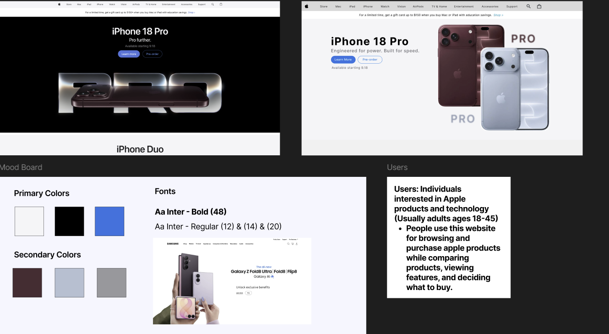
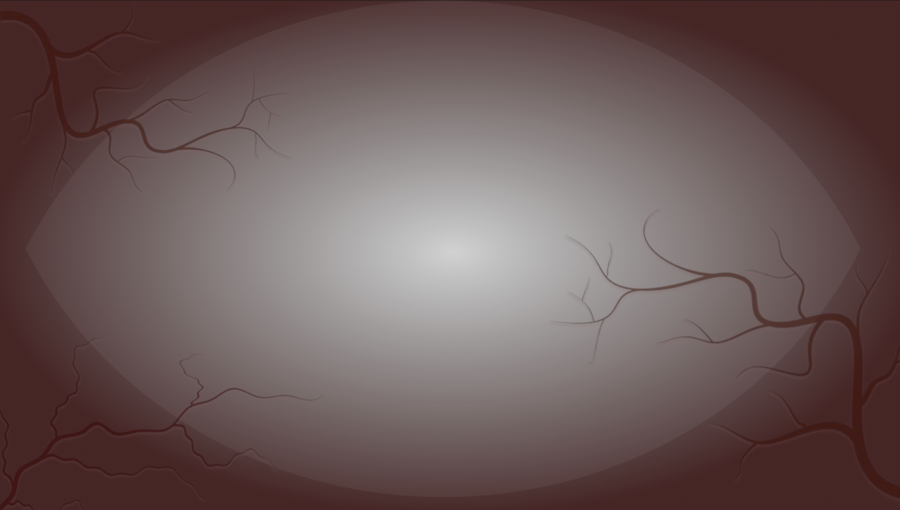

Hackathon
Ignition Portal
An onboarding portal that gathers the tasks and resources new Georgia Tech students need into one place.
An onboarding portal that gathers the tasks and resources new Georgia Tech students need into one place.

A mid-fidelity concept for an AI-assisted way to find image references, grounded in user research. Still in progress, not a launched product.

A patient intake tool that organizes information for ER staff and flags urgent cases, without making medical decisions itself.

Interface redesigns in Figma, including Duolingo profile pages and an Etsy checkout rebuilt with Auto Layout.

UI overlays and controls I designed in Figma for a tense, paranoia-themed game built by a large VGDev team.

A 2D platformer with a bunny protagonist that I built end to end, from movement systems to art and UI.